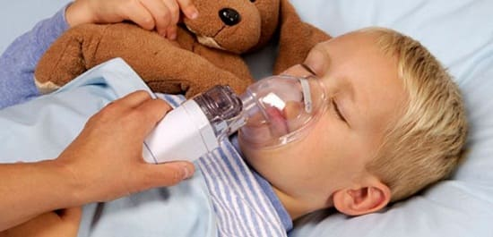
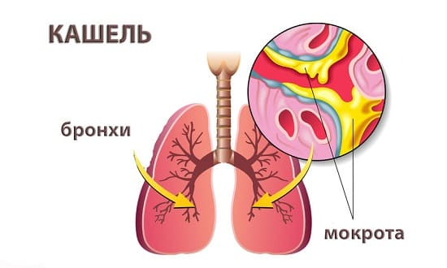

Бронхит — инфекционное воспаление бронхов. Распространенное заблуждение что бронхит всегда вызывается бактериями и требует, лечения антибиотиками. Дело обстоит совсем не так. Бронхит, особенно у детей и младенец, часто вызывает вирусы. Однако ОРВИ и кашель могут осложняться развитием вторичной бактериальной инфекции, так как бактерии прекрасно развиваются в слизи, переполняющей бронхи при этом. Предлагаем вашему вниманию информацию, которая поможет в понимании природы, диагностике и лечение бронхита.
СИМПТОМЫ
При воспалении (из-за вирусов или бактерий) в бронхах образуется много слизи, более густой, чем при обычных насморке и кашле. Вы заметите следующие признаки:
• непрерывный громкий кашель;
• хриплое дыхание и хрипы в легких;
• боль в груди или горле при кашле.
ЧТО ДЕЛАТЬ
Лечение такое же, как мы рекомендуем при обычной простуде с кашлем, с акцентом на выведение слизи из бронхов:
• паровые ингаляции. Пусть ребенок хотя бы 3 раза в день какое-то время глубоко дышит паром через рот в ванной комнате или другим способом;
• очищение бронхов. Мы надеемся, что вы не используете средства, подавляющие кашель (кроме ситуаций, когда кашель действительно затрудняет ребенку жизнь). Поощряйте ребенка периодически откашливаться, чтобы выводить слизь из бронхов. Отхаркивающая микстура разжижает густую слизь, облегчая откашливание. Могут помочь натуральные средства из трав, например, бронхипрет;
• постукивание по груди. После того как ребенок подышит паром или примет отхаркивающее средство, потратьте пару минут на то, чтобы мягко простучать кончиками пальцев по груди и спине, поднимаясь снизу-вверх. Это поможет вывести слизь и облегчит откашливание.

СОВЕТ ДОКТОРОВ СИРС: МОЖНО ЛИ ПРОГЛАТЫВАТЬ СЛИЗЬ? Многие родители выражают обеспокоенность тем, что их ребенок не сплевывает слизь, которую откашлял. Они переживают, что заглатывание слизи мешает выздоровлению. Это не так. Пока ребенок откашливает слизь из бронхов — не имеет значения, куда она отправляется потом: в мусорное ведро, в канализацию или в животик (и в конечном счете опять же в канализацию!). |
КОГДА ВОЛНОВАТЬСЯ
Нет никакой необходимости мчаться к врачу в первые несколько дней непродуктивного кашля, чтобы лечить бронхит, так как большинство бронхитов у детей имеют вирус природу. Вот несколько признаков появление которых указывает на соединение достаточно тяжелой бактериальной инфекции, требующей лечения антибиотиками:
• усиление боли в груди при кашле.
Вирусы не очень сильно повреждают слизистую оболочку бронхов отличие от бактерий, которые могут способствовать образованию стоящих ран на слизистой, что провождается сильной болью кашле;
• повышение температуры тела протяжении более чем пяти дней или очень высокая температура течение 3 дней — повод для непременного визита к врачу;
• учащенное, затрудненное или хриплое дыхание. Если ребенку становится все труднее дышать — немедленно обратитесь к врачу. Это может быть пневмония или приступ астмы.

Здоровье ребенка от докторов Сирс / Сирс У. и др.